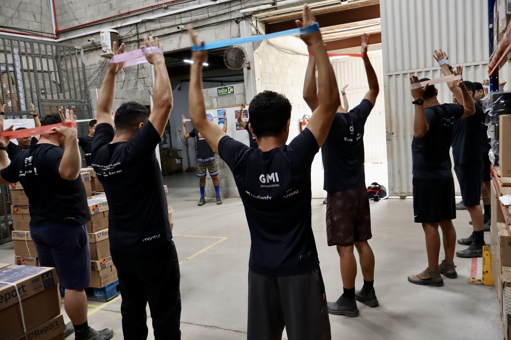

Ergonomia e AEP / AET
Análise dos postos e processos para orientar melhorias e a gestão dos riscos ergonômicos.
Saiba mais ↗Solução FITE · Ginástica laboral
Pausas ativas e movimento na rotina, com atividades orientadas para as equipes.

O que está incluso
Pausas orientadas e atividades em grupo, ajustadas ao ambiente e à rotina das equipes. Do escritório à operação, cada programa começa pelo contexto de quem participa.
Outras soluções
Análise dos postos e processos para orientar melhorias e a gestão dos riscos ergonômicos.
Saiba mais ↗Programas de prevenção e cuidado conectados às necessidades dos colaboradores.
Saiba mais ↗Conteúdo e atividades para aproximar as pessoas da saúde e da prevenção.
Saiba mais ↗Priorização de ações, indicadores e acompanhamento para apoiar a gestão.
Saiba mais ↗Avaliação e adaptação de postos e processos para apoiar a reintegração ao trabalho.
Saiba mais ↗Avaliação, implementação e acompanhamento de tecnologias nas operações.
Saiba mais ↗Desenvolvimento técnico e visão consultiva para profissionais de saúde do trabalhador.
Saiba mais ↗